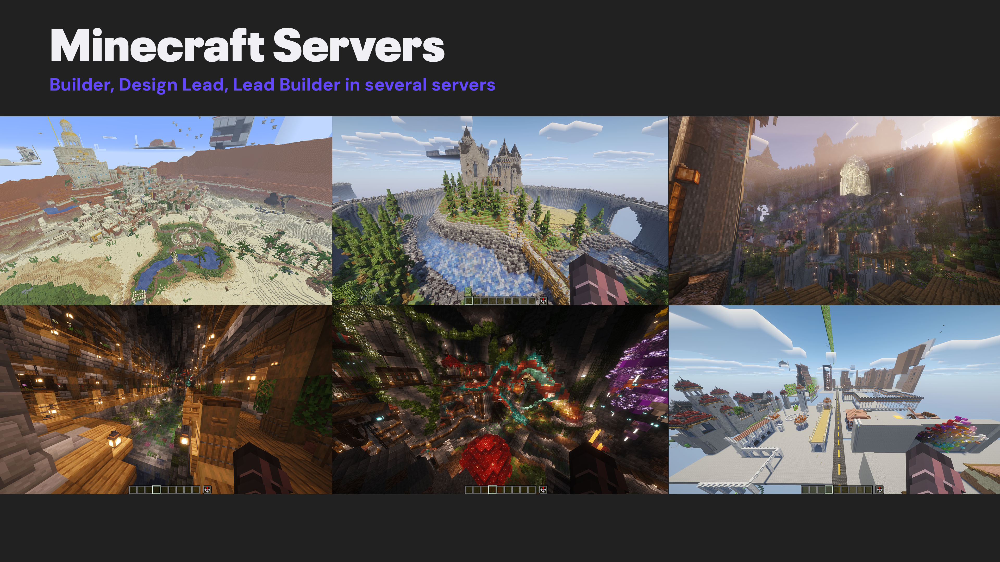

Supplementary
Process documentation and in-depth exploration behind select projects from the portfolio.
Structural analysis and material exploration for origami-based emergency shelters.
Ergonomic research and joinery exploration for functional seating design.
A curated collection of paintings and visual explorations.
About
I'm a student product designer based in India with a fascination for hands-on experimentation, material exploration, and purposeful problem solving. I love seeing concepts take shape into real, tangible products that make a difference.
Whether I'm folding polypropylene into deployable shelters, throwing clay on a wheel, or sketching furniture joints, I approach every project with the same hands-on mentality. I believe in learning through making — each prototype, each failed experiment, and each material test brings me closer to design solutions that are both beautiful and purposeful.
I'm drawn to projects that require physical problem-solving: understanding how loads transfer through a structure, how a surface texture affects grip, or how a folding pattern enables flat-pack shipping. These tangible challenges keep me grounded and constantly learning.